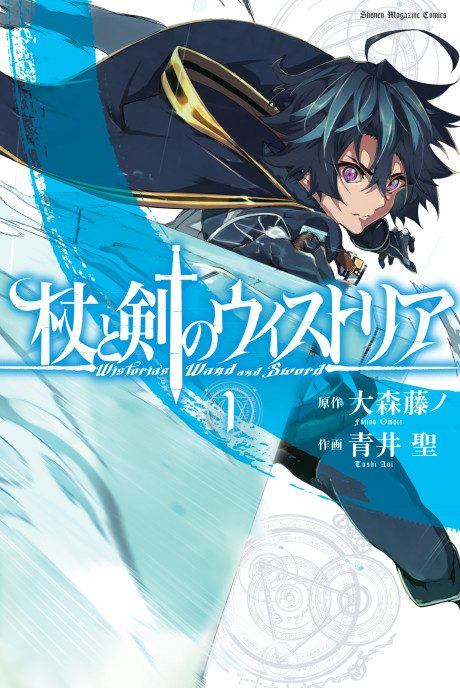

Anime
Anime
Manga2024 · Action, Comedy, Drama
Wistoria: Wand and Sword
杖と剣のウィストリア
AniList7.9
Animeter—
2 seasons24 ep
MangaUnclear
Anime finished. Where does the manga pick up?
StatusNo source yet
We looked for where the anime ends in the manga but found no source we trust yet. The manga is still running.
More like Wistoria: Wand and Sword